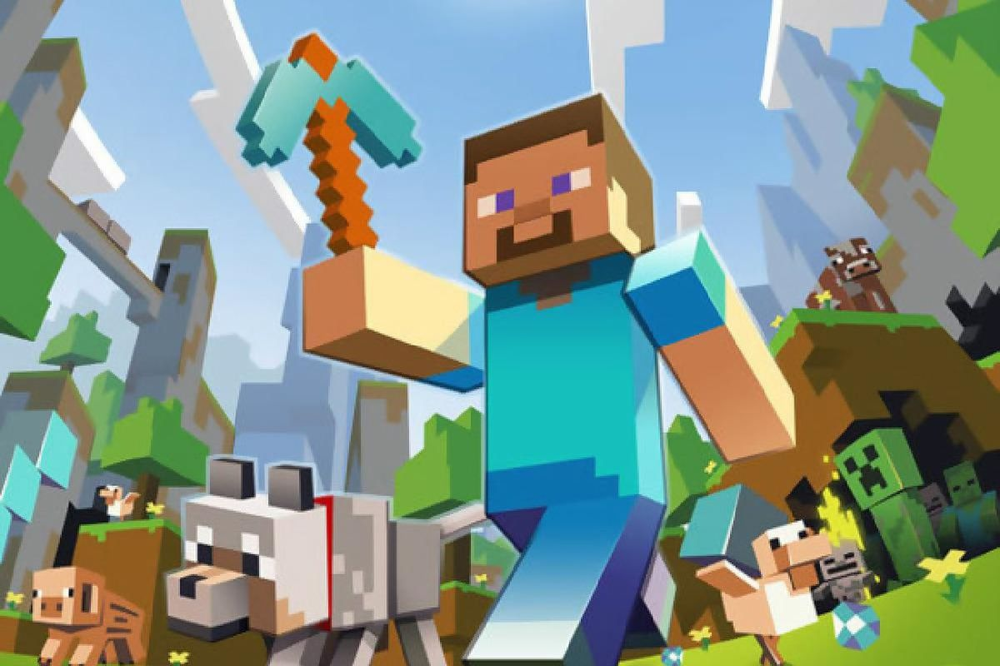

|
 |
 |
 |
|---|
About Me
I, Luca Spinella was born in January 2nd 2003 in Connecticut
I first was exposed to coding though videogames, because of my love of games I took a class of computer science in highschool
Now I am enrolled in the University of Rhode Island and persuing a career in computer science
Some of my other hobbies beside computer science are videogames, hiking, and working out!
Right now you are on the about me page of my website. If you click above on the other images, they will take you to their respective areas
The "Home" button will bring you back to the homepage, the "Javascripts" button will bring you to my coding projects collection, and the "About Me" button will bring you to my bio!